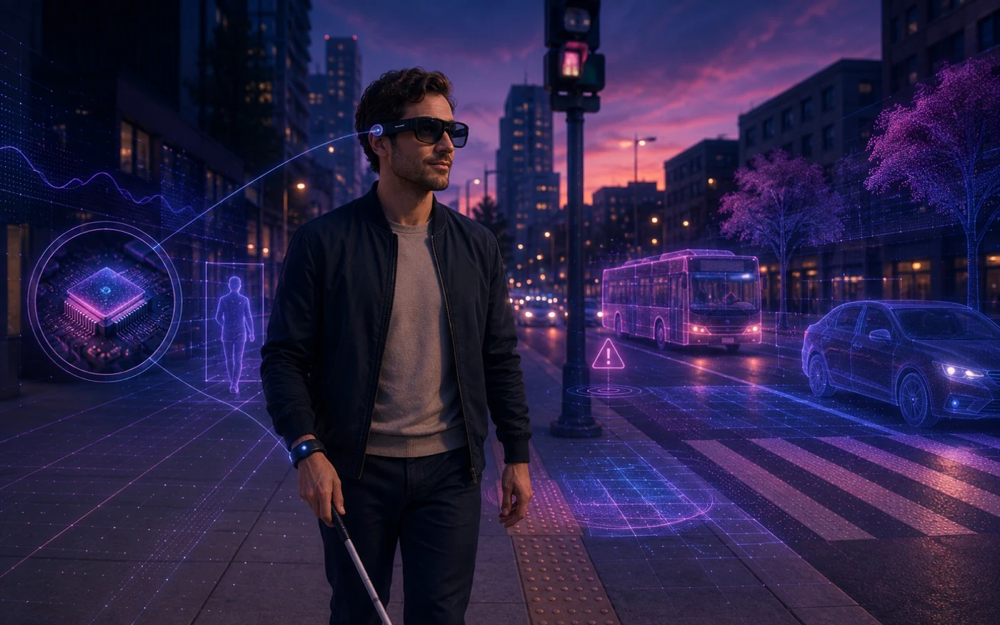

Ongoing research
Edge-Native Assistive Vision Agent
An agentic vision assistant for blind and low-vision users. On-device tools answer most questions; a calibrated-competence policy decides when to answer, hedge, ask for a better photo, or decline. A cloud vision-language model is called only when the local tools can’t settle it.
- 3,000blind-user photo questions in the benchmark
- 1,358automated tests passing
- 5tools compared on every question